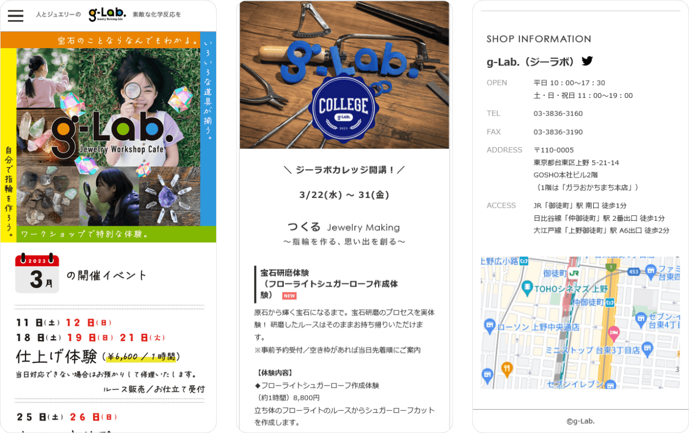
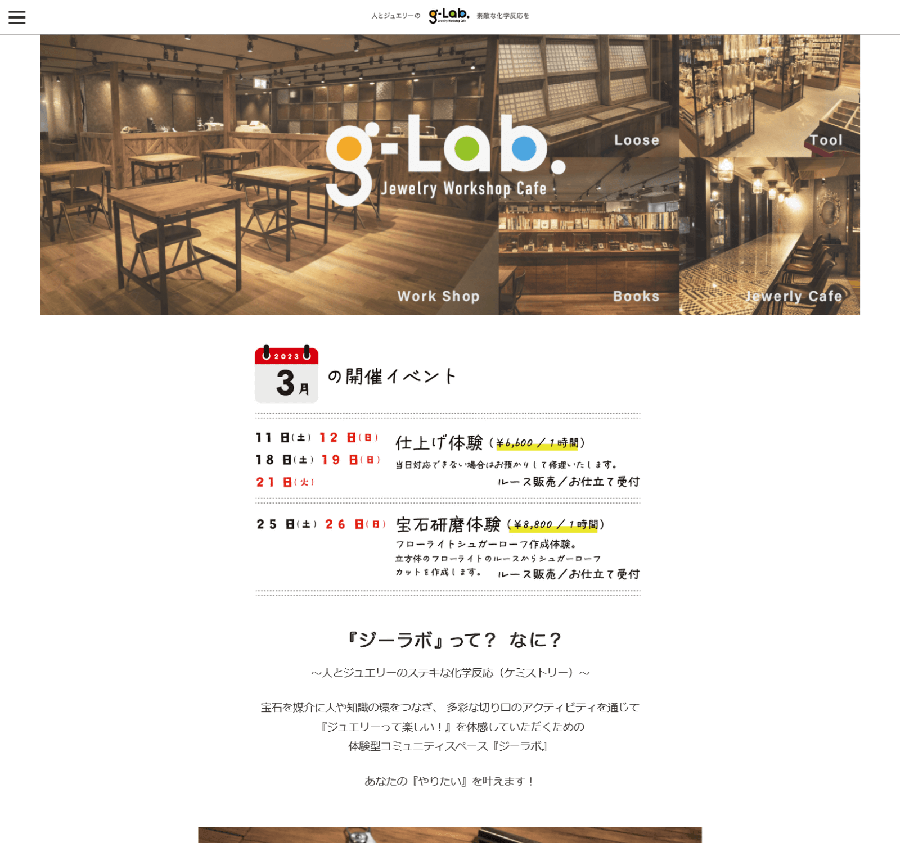

モバイル

PC
体験型カフェ「ジーラボ」サイト作成
作品のコンセプト
自社の新事業、体験型カフェ「ジーラボ」オープンに伴いサイトを作成。
体験型コミニティの訴求をメインにしたいとの事でしたので、ターゲットを親子・子供に設定しシンプルでアクティブなイメージで作成しました。
自社のイベントに合わせて突貫気味に立ち上げ、最初は仕様が迷走している状態でしたので、フロア担当者と内容の詳細を都度確認しつつ更新・改変しておりました。
掲載する文章の校閲・作成、画像の切り出し・修正等も担当。
作品のポイント
月2回程度イベント更新がありましたので、すぐに目につくようTOPにイベントカレンダーを設置。
おしたて企画など追加コンテンツが発生することが多々ありましたので、遷移しやすいようメニューボタンやNEWアイコンを追加するなどこまめな改修を行っておりました。
新事業サイト作成
担当
コーディング/PC版デザイン/イベント項目作成/ドメイン会得/サイト更新
製作期間
1週間程度
使用した言語・ツール
HTML/CSS/JavaScript/jquery/
Xd/Photoshop/Illustrator/VScode